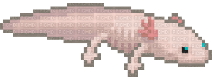
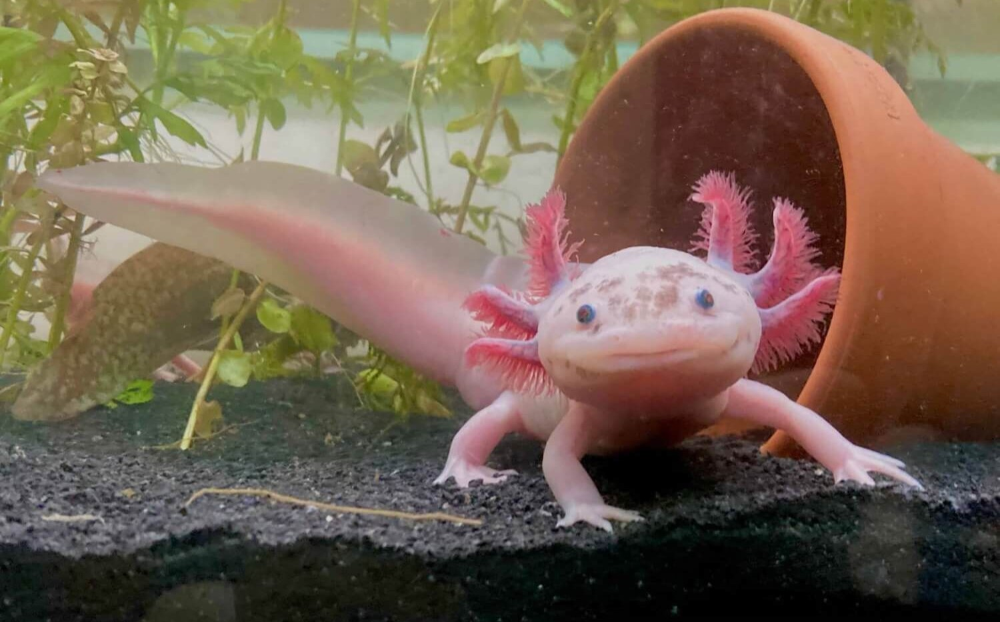
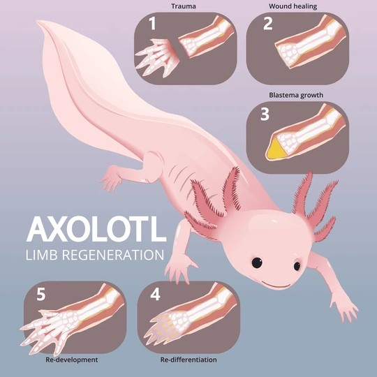
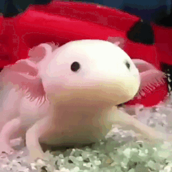
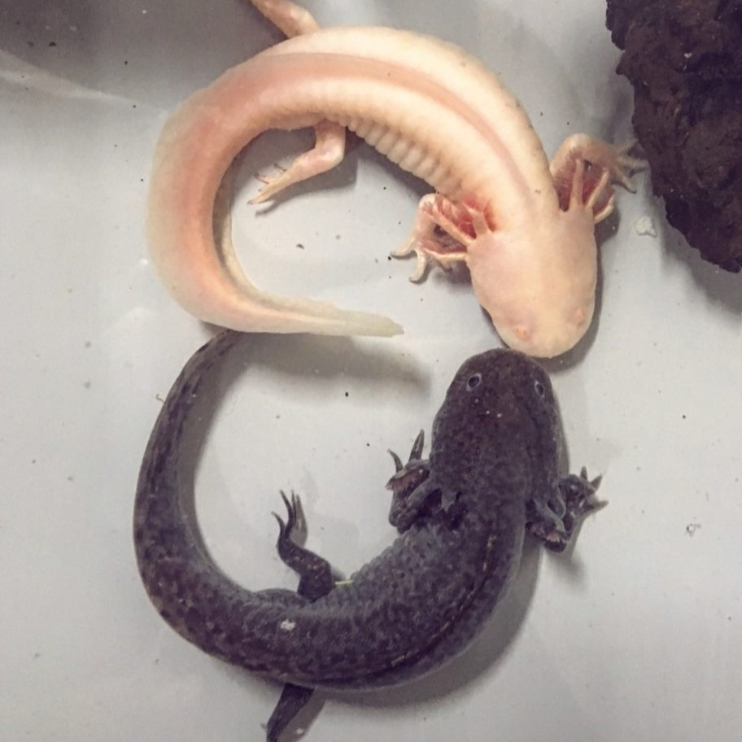
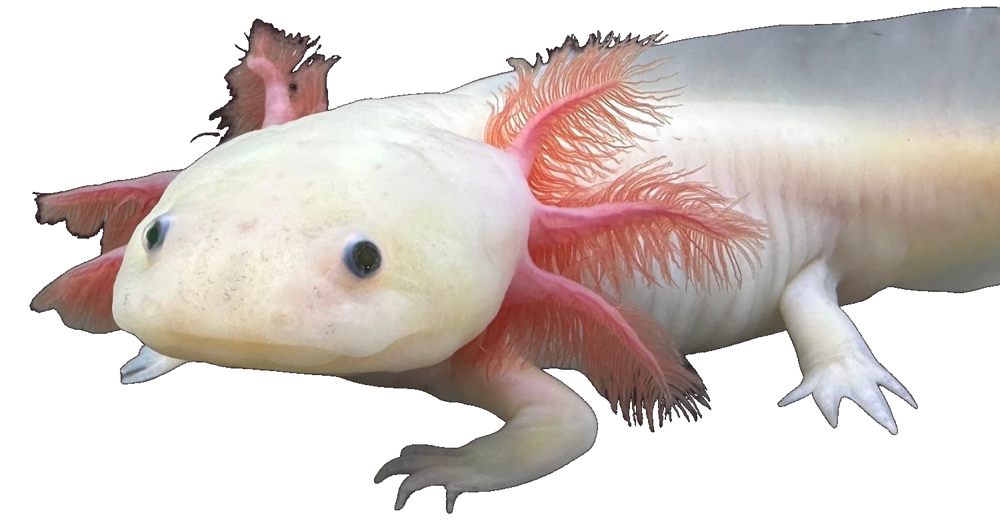

AXOLOTL

Welcome to Mer and Axolotl! Where the peak is


If an axolotl loses a limb, it regenerates. These salamanders can grow back not just legs and tails, but also parts of their heart, spine and even brain.
Despite their gentle appearance, young axolotls in captivity will sometimes bite off each other’s limbs. Especially in crowded tanks.


When axolotls reach about six months old, they begin to mate and the process involves them moving together in a circular, dance-like fashion.

Why axolotls?
I have chosen to showcase axolotls because quite frankly, they are flippin' adorable. Fight me.
General Facts!
The axolotl is carnivorous, consuming small prey such as mollusks, worms, insects, other arthropods, and small fish in the wild. Axolotls locate food by smell, and will "snap" at any potential meal, sucking the food into their stomachs with vacuum force.
Unfortunately, axolotls have been driven to near extinction by the introduction of invasive species such as tilapia and carp; with a decreasing population of around 50 to 1,000 adult individuals, the species has been assessed as critically endangered by the International Union for Conservation of Nature!
Axolotls have four pigmentation genes; when mutated, they create different color variants. The four most common mutant colors are as follows:
- Leucistic: pale pink body, black eyes
- Xanthic: grey body, black eyes
- Albinism: pale pink or white body, red eyes
- Melanism: black or dark blue body with no gold speckling or olive tone